Поширені запитання
📓 Чим ця роздача відрізняється від оригінальних?
Насамперед, чим ця роздача не відрізняється - добіркою книг. Імовірність того, що тут книги немає, а в «оригінальних» роздачах є - мінімальна. Якщо ви знайшли таку книгу - це надзвичайна подія, будь ласка, зв'яжіться зі мною.
Тепер про відмінності.
Основна відмінність - розмір. Заради нього ця роздача і існує.
Додаткові бонуси:
- Виправлено книги з порушеннями xml-структури.
- Виправлено або видалено пошкоджені ілюстрації.
- Видалено такі дратівливі для багатьох дублікати (не всі, звичайно)
- А ще тут є коментарі читачів з сайту Флібусти та коротка інформація про деяких авторів.
- Окрім того, тут можна знайти каталогізатор FLibrary, він кращий, кращий за
собакуMyHomeLib.
Чому кількість книг різна?
- Видалено дублікати
- Вилучено файли нульового розміру
- Вилучено файли, наполовину обірвані
- Додано неіндексовані файли, тобто такі, що є в архівах, але відсутні в дампах Флібусти/Лібрусека
А тоді чому ця роздача значно менша за розміром?
Зменшення розміру досягнуто так:
- Тексти книг та зображення зберігаються окремо.
- Тексти заархівовані в 7z, що значно ефективніше, ніж zip.
- Зображення перекодовані в JPEG XL, який є більш ефективним, ніж JPEG і PNG.
- Відгуки та інформація про авторів мають невеликий обсяг, ~1Гб.
- Видалені дублікати також дають свої 5% економії
- Видалені пошкоджені та такі, що не піддаються відновленню, зображення, але це зовсім мізер
📓 Як буде оновлюватися роздача?
Так само як «оригінальні», в режимі додавання нових архівів
(⊙_⊙) Увага! Роздача відбувається шляхом додавання нових архівів; при кожному додаванні створюється новий торрент. Щоб почати завантаження нового архіву, користувачам необхідно зробити наступне:
- Зупинити завантаження.
- Видалити старий торрент у себе з програми-клієнта, але без видалення файлів роздачі.
- Завантажити новий торрент і запустити його у себе в програмі-клієнті замість старого, при цьому вказати клієнту шлях до старої папки, куди і має відбуватися завантаження нових архівів.
Якщо Ви вже видалили старі архіви, то запобігти їх повторному завантаженню можна, прибравши галочки у відповідних місцях при запуску нового торрента. По можливості, бажано не видаляти старі архіви якомога довше. Так Ви допоможете іншим людям завантажити роздачу швидше.
Буду намагатися оновлювати роздачу на початку місяця.
Оновлення містять:
- Пара нових 7z-архівів з книгами у форматі fb2, без зображень
- 4 нових zip-архівів з зображеннями: обкладинки та ілюстрації
- Оновлення індексного файлу *.inpx
- Заміна дистрибутивів FLibrary на актуальні, якщо вийшов реліз
- Оновлення останнього архіву з відгуками читачів + новий (місячний) архів з відгуками читачів
- Оновлення останнього архіву з інформацією про авторів + новий архів, якщо назбиралося достатньо нових записів про авторів
На жаль, такий підхід не є ідеальним для відгуків читачів та для інформації про авторів через регулярне виправлення старих записів на сайті. Тому іноді ці файли будуть перевикладатися всі разом, у міру накопичення правок у старих записах або з технічних причин.
📓 Чи буде працювати з цією роздачею мій улюблений каталогізатор?
Ні, не буде.
І MyHomeLib не буде?
І MyHomeLib не буде.
Принаймні не буде належним чином. Так, індексний файл *.inpx у роздачі сумісний із MyHomeLib, тобто створити колекцію зможете. Але навіщо? З неї не вдасться експортувати книги. Та й сама колекція не буде коректною, MyHomeLib не вміє у мультисерійність книг, тому наплодить копії книг, що входять до кількох серій. Коротше, у морг.
А xxxLib для yyyOS?
У мене немає ні можливості, ні бажання перевіряти всі наявні в Інтернеті каталогізатори на сумісність з створеним мною форматом зберігання. Але майже впевнений, що не злетить. Перевірте самі і повідомте спільноту. Результат вашої перевірки додам сюди, з посиланням на вас, зрозуміло.
А чому?
Ну добре, каталогізатори з підтримкою 7z-архівів, можливо, і працюватимуть, але з обмеженням: отримані ними книги будуть без зображень.
І що робити?
Користуватися FLibrary
Не можу, у мене лінукс
що він вміє
Не можу, у мене Windows 7
Так, тоді дійсно не зможете. Ця роздача не для вас, вибачте.
нам пишуть
для користувачів Windows 7/2008R2 - VxKek, тож використовувати на 7 можна! Найголовніше, щоб пристрій був повністю ізольований від мережі або в повністю закритому мережевому контурі. (c) HedgehogInTheCPP
📓 Яким чином повернути в fb2 обкладинки та ілюстрації, що зберігаються окремо ?
Для роботи з таким форматом зберігання книг у роздачі є каталогізатор FLibrary. При експорті книг з колекції FLibrary повертає зображення в текст fb2. Те ж саме при запуску сторонньої читалки з FLibrary. І при завантаженні книги із OPDS. І через web-інтерфейси. Як завгодно, якщо книга дістається з колекції за допомогою FLibrary, результат буде один - зображення повертаються в fb2, на свої законні місця.
📓 Як додати нову колекцію?
Діалогове вікно додавання або створення нової колекції можна викликати з головного меню програми
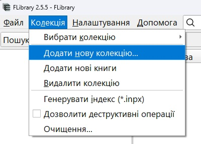
Це ж діалогове вікно з'являється при першому запуску програми
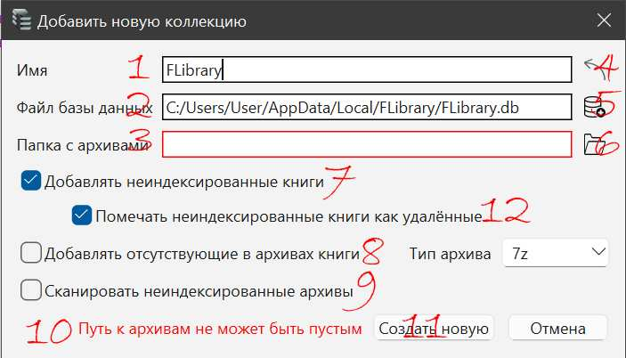
У діалоговому вікні слід вказати:
1. Назву колекції.
2. Шлях до файлу з базою даних.
3. Шлях до папки з архівами книг, там же програма очікує знайти індексний файл *.inpx
13. Шлях до індексного файла *.inpx, якщо він знаходиться в іншій папці ніж архів книг, або якщо потрібно створити колекцію без архіву книг.
Уникнути помилок при заповненні допоможуть кнопки:
5. Покаже діалогове вікно вибору файлу бази даних.
6. Покаже діалогове вікно вибору папки з архівами книг.
4. Витягне ім'я з індексного файлу колекції, якщо знайде. Щоб це спрацювало, спочатку потрібно вказати 3 або 13.
Якщо щось було заповнено неправильно, про це вкаже рядок сповіщення про помилку 10.
Після правильного заповнення полів 1-3 можна натиснути на кнопку 11. Почнеться процес створення колекції. Це не забере багато часу, залежно від продуктивності процесора і швидкості диска, на якому ви вирішили розмістити базу даних. На моєму комп'ютері створення нової колекції - локальної копії Флібусти займає близько 25 секунд.
Деталі, нюанси
В ролі бази даних можна вказати вже наявний файл, наприклад, від більш ранішої версії програми, або взагалі від MyHomeLib. Тоді кнопка 11 змінить текст на «Додати», і замість створення нової колекції буде додана колекція із зазначеного файлу. (⊙_⊙) УВАГА! Після цього файл бази даних, швидше за все, не буде придатний для використання в тій програмі, в якій був створений, тому що FLibrary змінить його структуру під себе.
Параметри створення колекції:
7. Додавати неіндексовані книги, за замовчуванням увімкнено. До колекції будуть додані знайдені в архівах книги, про які немає записів в індексі архіву. Тобто в архіві є, в індексному файлі - немає.
8. Додавати відсутні в архівах книги, за замовчуванням вимкнено. До колекції будуть додані всі наявні в індексі книги, навіть ті, файлів яких немає в архіві. Тобто симетрично попередньому, в індексі є, в архіві може і не бути.
9. Сканувати неіндексовані архіви, за замовчуванням вимкнено. FLibrary просканує всі архіви у вказаній папці, в тому числі не зазначені в індексному файлі. Тобто можна підсунути в папку з архівами сторонні архіви з книгами у форматі fb2, і вони будуть додані до колекції. Зрозуміло, таке сканування займе більше часу, ніж простий аналіз *.inpx.
12. Позначати неіндексовані книги як видалені, за замовчуванням увімкнено. Неіндексовані файли знаходяться в архіві з історичних причин і зазвичай мають індексовані копії.
14. Тип архіву. При встановленій галочці 8 для проіндексованої книги в папці 3 може не виявитися архіву. Тоді буде записаний архів з ім'ям із індексу і вказаним розширенням. Таке може знадобитися при пошуку потрібної книги без завантаження всієї роздачі.
📓 Як оновити колекцію?
Завантажуємо оновлення роздачі як зазвичай, при наступному запуску FLibrary виявить зміну індексного файлу *.inpx і запропонує оновити колекцію. Погоджуєтеся, і через кілька секунд все готово. Проте, час від часу є сенс знову створювати колекцію «з нуля», оскільки автоматичне оновлення підтягує тільки відсутні раніше дані. У той час як вже наявні описи можуть містити корисні виправлення. Іноді корисно повторно створити колекцію при оновленні версії FLibrary, особливо якщо це рекомендується на сторінці What's Changed. При повторному створенні колекції не забувайте зберігати дані користувача.
Для http-сервера FLibrary є приховане налаштування (див. нижче), яке спонукає його без повідомлення оновлювати колекцію при зміні *.inpx.
📓 Як знайти книгу за назвою, автором, серією?
За автором і серією краще шукати у відповідних розділах навігації, де можна не тільки шукати за списком, але й фільтрувати його.
Проте існує також можливість пошуку книг за їх назвою, автором або серією.
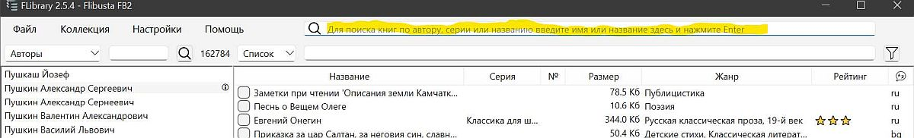
Нехай, для прикладу, потрібно знайти книгу «Гарри Поттер и методы рационального мышления». У програмі реалізовано повнотекстовий пошук за назвами книг, тому не обов'язково вводити всю назву. Достатньо ввести кілька слів, можна не повністю, і не в тій послідовності, в якій вони вказані в назві.
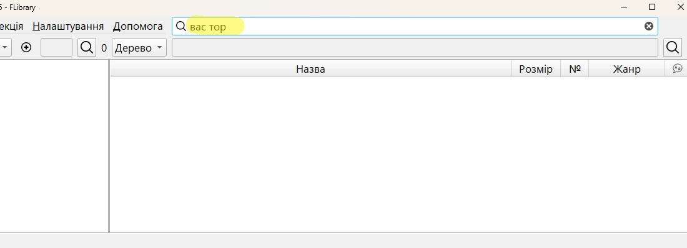
Натискаємо Enter (або іконку лупи зліва), і програма переходить до розділу навігації «Пошук», у вікні книг показує результати пошуку
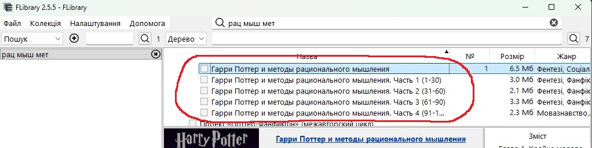
На цьому можна було б і закінчити, але додам:
- Пошукові запити зберігаються в розділі «Пошук», там їх можна вибрати для повторного використання
- Додати пошуковий запит можна в цьому ж розділі, кнопкою з плюсиком
- Непотрібний запит можна видалити кнопкою з хрестиком
Накопичилися пошукові запити. Як їх видалити? По одному незручно
- Виділити все (Ctrl+A) або лише непотрібні запити (миша + Ctrl або Shift)
- Натиснути кнопку видалення на одному з виділених
- Підтвердити видалення у діалоговому вікні, що з'явилося
- Те ж саме для списку груп.
📓 Чи можна сортувати книги за кількома колонками?
Можна. Утримуйте Shift, натискаючи на заголовки колонок.
📓 Хочу бачити книги тільки однією мовою. Або двома. Можна прибрати інші?
Можна. Через меню Налаштування/Фільтри, викликаємо діалогове вікно налаштування фільтрів
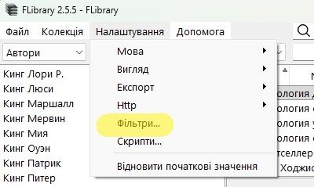
Переходимо на вкладку «Мови», відзначаємо галочками в колонці «Книги відфільтровані» ті мови, книги на яких не хочемо бачити. Ставимо галочку «Фільтр увімкнено», натискаємо «Застосувати».
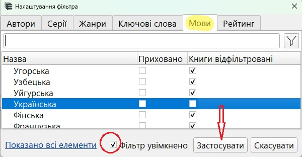
Усе, книги на небажаних мовах приховані. Галочками в колонці «Приховано» можна приховувати мови з навігації (лівої панелі головного вікна).
Подібним чином можна прибрати непотрібних авторів, серії, жанри та ключові слова.
(⊙_⊙) Увага! Галочки незалежні - прибравши з навігації якийсь елемент, ви і надалі бачитимете пов'язані з цим елементом книги з інших елементів/розділів навігації. І навпаки, відфільтрувавши книги за якимось елементом навігації, ви надалі бачитимете цей елемент навігації в його розділі, а вибравши його, будете бачити і відфільтровані книги (якщо вони не були відфільтровані за іншим елементом).
У діалоговому вікні працює пошук/фільтр, а у заголовках колонок з галочками є контекстне меню.
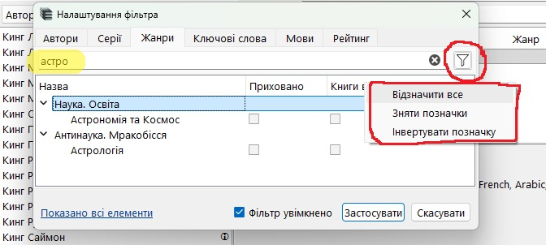
"Швидкий фільтр" за мовою як і раніше є доступним з контекстного меню заголовка колонки мови в таблиці книг

📓 Чи можна фізично видалити непотрібні мені книги з архівів?
Можна. В програму закладена можливість фізичного очищення колекції, з видаленням файлів з архіву і записів з бази даних. Функція видалення файлів з архіву початково заблокована, щоб її розблокувати, потрібно в головному меню «Колекція» вибрати пункт «Дозволити деструктивні операції». Після підтвердження наміру продовжувати і згоди з небезпекою остаточної втрати книг, в контекстному меню книг активується пункт «Видалити назавжди». Він же зробить активною галочку 7 «Видалити назавжди разом з файлами книг з архіву», див. нижче.
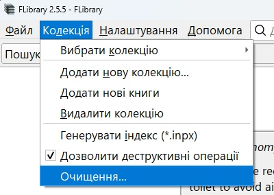
Вибір пункту меню «Очищення...» призведе до появи вікна критеріїв очищення колекції.

FLibrary підтримує наступні критерії:
1. "Видалені" книги. При виборі цього критерію з колекції будуть видалені книги, позначені в базі даних як видалені.
2. Дублікати книг. Програма вважає дублікатом однойменні книги, що мають хоча б одного спільного автора. При виборі цього критерію такі книги будуть видалені, крім однієї, доданої до колекції останньою. Таким чином, дублікатами з-поміж інших опиняться різні видання або різні переклади однієї книги. Будьте обережні.
3. Жанри. Можна відзначити небажані жанри. У цього критерію є додаткове налаштування, реалізоване радіокнопками:
- Повний збіг. При виборі будуть видалені ті книги, всі жанри яких входять до множини обраних для видалення.
- Частковий збіг. Будуть видалені ті книги, у яких хоча б один жанр обраний для видалення. Дуже небезпечна опція.
5. За розміром. При обрані цього критерію будуть видалені книги, розмір файлу яких менше мінімального або більше максимального значення.
6. За рейтингом. Якщо бібліотечний рейтинг книги нижчий за вказаний і/або рейтинг відсутній, тобто книгу наразі ніхто не оцінив.
9. Збірники.
Після акуратного розставлення галочок натискаємо кнопку 8 «Аналіз колекції», трохи чекаємо аналізу колекції на відповідність зазначеним критеріям, після чого бачимо повідомлення з результатом
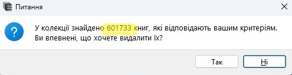
Це останній шанс передумати і натиснути «Ні». Але якщо натиснути «Так», програма почне процес видалення книг.
(⊙_⊙) УВАГА! Якщо встановлено галочку 7, то файли книг будуть фізично видалені з архівів, а їх записи - з бази даних. Для цього може знадобитися тривалий час, залежно від кількості книг, що видаляються, потужності комп'ютера, продуктивності диска, на якому розташована колекція, тощо. Але не дуже довго. Якщо галочка 7 не встановлена, то книги будуть просто приховані в інтерфейсі FLibrary.
Після закінчення очищення колекції є сенс деактивувати деструктивні операції.
📓 Як конвертувати (перетворити) книгу з fb2 у потрібний мені формат?
Ліньки так багато читати, а можна швидше?
Можна. Встановити цей ключ реєстру, відкоригувавши шляхи:
Windows Registry Editor Version 5.00 [HKEY_CURRENT_USER\SOFTWARE\HomeCompa\Flibrary\Scripts\a1e61de4-da10-4015-a7c3-91453cd0e215] "Name"="Конвертация в epub" "Number"=dword:00000001 "Type"="ExportToDevice" [HKEY_CURRENT_USER\SOFTWARE\HomeCompa\Flibrary\Scripts\a1e61de4-da10-4015-a7c3-91453cd0e215\37fe0cd3-35ee-4521-85a9-5b3f00138585] "Command"="D:\\programs\\MyHomeLib\\converters\\FB2ePub\\Fb2ePub.exe" "Arguments"="\"%source_file%\" \"D:/books/%author%/[%series%/[%seq_number%-]]%title%.epub\"" "Number"=dword:00000002 "Type"="LaunchApp" [HKEY_CURRENT_USER\SOFTWARE\HomeCompa\Flibrary\Scripts\a1e61de4-da10-4015-a7c3-91453cd0e215\3b791fea-5942-479d-b7e2-6c3c3f6862cd] "Command"="mkdir" "Arguments"="\"D:/books/%author%/[%series%]\"" "Number"=dword:00000001 "Type"="System"
У структурі FLibrary немає вбудованих конвертерів, але є можливість долучити будь-який сторонній, якщо він має інтерфейс командного рядка. Наприклад, можна запозичити потрібний конвертер зі збірки MyHomeLib. Для виклику в FLibrary стороннього конвертера потрібно налаштувати скрипти, по одному на кожен бажаний формат.
1. У головному меню вибираємо Налаштування/Скрипти...
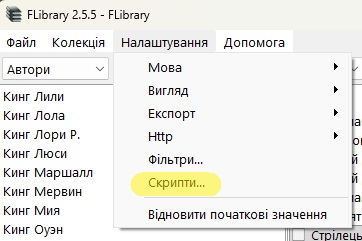
2. У вікні, що з'явилося, натискаємо "Додати скрипт"
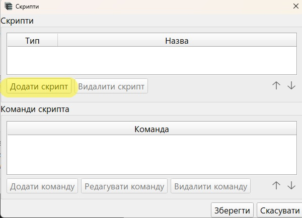
3. У верхній частині вікна («Скрипти») з'явиться рядок, в який записуємо бажану назву скрипта.
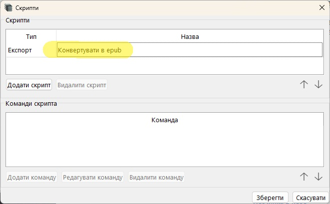
Тепер необхідно додати команди скрипта. Які саме - залежить від обраного стороннього конвертера. Типовий набір складається з двох команд: 1. створити папку, 2. викликати конвертер.
Отже, додаємо команди.
4. Натискаємо "Додати команду"
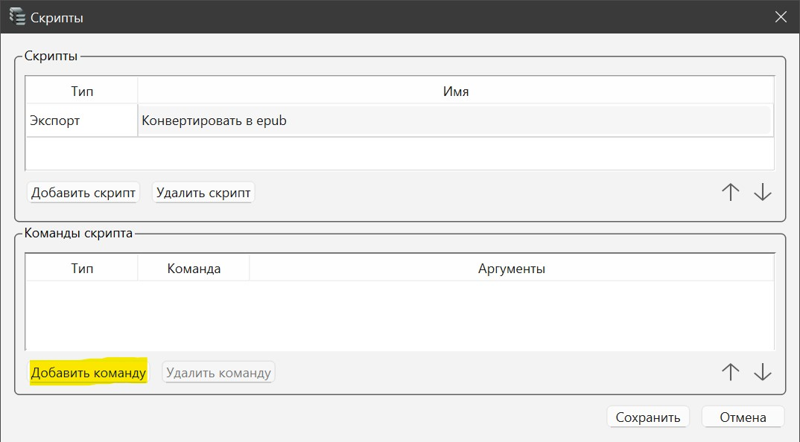
5. У нижній частині вікна «Налаштування команди» з'являться 4 рядки, у першому рядку "Тип" (1) із випадаючого меню обираємо "Системна команда"
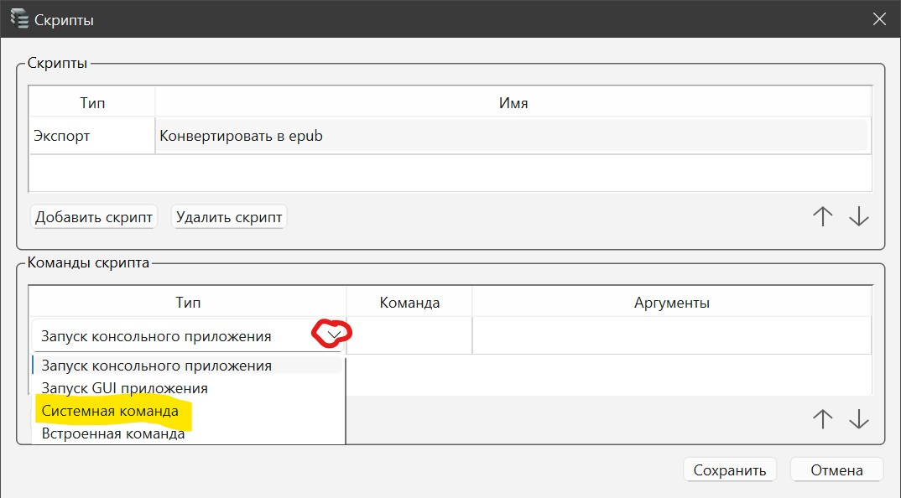
6. У другому рядку "Команда" (2) записуємо mkdir , тобто створити папку.
7. В третьому рядку "Аргументи" (3) вводимо потрібний шлях. (⊙_⊙) УВАГА! Слеші повинні бути в стилі Windows, тобто такі - \ . Кожен аргумент бажано брати в лапки. Приклад:
"d:\books\epub"Зберігаємо результат - "ОК"

7. Додаємо команду для запуску конвертера: натискаємо "Додати команду"
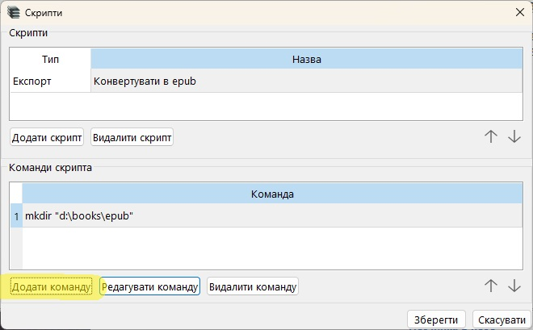
8. У першому рядку "Тип" (1) із випадаючого меню обираємо "Запуск консольної програми",
після чого натискаємо на іконку вибору програми у другому рядку "Команда" (2)
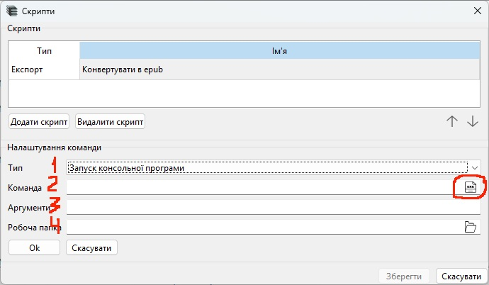
* Призначення четвертого рядка "Робоча папка"(4) - див. нижче "Деталі, ньюанси"
9. У діалоговому вікні вибору файлу вказуємо потрібний сторонній конвертер:
10. Додаємо параметри запуску конвертера в рядку "Аргументи" (3). Для конвертера потрібно вказати шляхи до файлів, вихідного та сконвертованого. Вводимо
"%source_file%" "d:\books\epub\book.epub"Зберігаємо результат - "ОК"
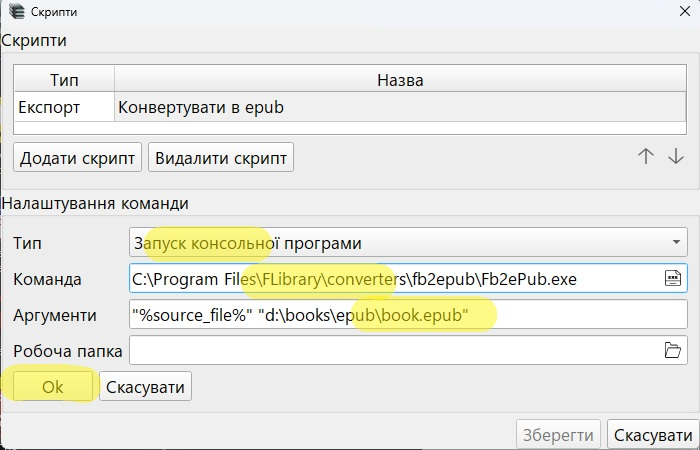
11. Зберігаємо скрипт
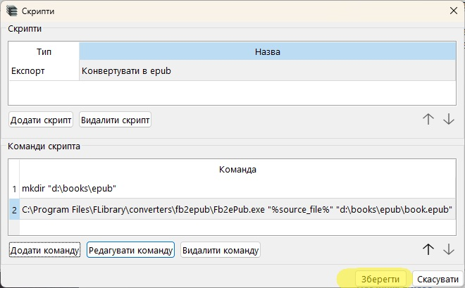
Усе, скрипт готовий. Відтепер в контекстному меню книг, у підменю Експорт буде пункт "Конвертувати в epub", тобто назва скрипта з п. 3
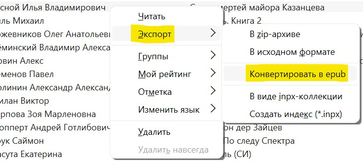
Якщо його вибрати, у папці d:\books\epub з'явиться файл book.epub.
Ймовірно, мало хто буде конвертувати книги щоразу в один і той самий файл, оскільки хотілося б, щоб файли зберігалися в папках за іменами авторів і мали назви за назвами книг. Для цього в командах скрипта при позначенні папок необхідно використовувати макроси. Наприклад, щоб шлях до книги містив її автора і серію (якщо є), а ім'я файлу - номер у серії (якщо є) і назву книги, в "Аргументи" (3) варто вказати такий рядок:
"d:\books\epub\%author%\[%series%\[%seq_number%-]]%title%.epub"Повний список наявних макросів можна отримати з контекстного меню редагування Аргументів
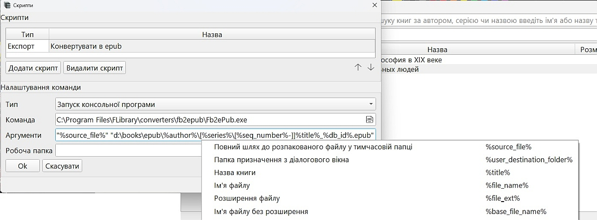
В рядок "Аргументи" записуємо вхідний та вихідний файл з ключами:
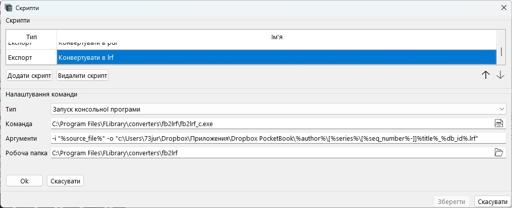
* CWD (Current Workind Directory) - це папка, з якої запущена програма, яка є коренем для відносних шляхів відкритих нею файлів. Для прикладу показана робота з конвертером fb2lrf_c.exe, якому потрібен файл з конфігом. Якщо його запустити вручну з його власної папки або, що те саме, запустити програмно (з FLibrary), вказавши його власну папку як CWD, то файл з конфігом можна вказати як -s default_styles.sini. А можна зовсім не вказувати, тому що за замовчуванням він намагається використовувати саме цей файл, і в цьому випадку йому це вдасться.Деталі, нюанси
"d:\books\%author%\[%series%]"
"%source_file%" "d:\books\epub\%author%\[%series%\[%seq_number%-]]%title%.epub"
"%source_file%" "d:\books\epub\%author%\[%series%\[%seq_number%-]]%title%_%db_id%.epub"
Зокрема конвертер fb2 в lrf (fb2lrf.exe - для перетворення в формат древнього соневського рідера Sony PRS-350 (650, 600...)) вимагає ключі для вхідного і вихідного файлу, а також приєднання дефолтного файлу зі стилями. Тому рядок "Аргументи" для цього конвертера виглядатиме так:
"-i "%source_file%" -o "d:\books\%author%\[%series%\[%seq_number%-]]%title%_%db_id%.lrf" -s "c:\Program Files\FLibrary\converters\fb2lrf\default_styles.sini"
або
"-i "%source_file%" -o "d:\books\%author%\[%series%\[%seq_number%-]]%title%_%db_id%.lrf"
а в рядку "Робоча папка" обираємо папку дефолтного файлу зі стилями.
"%user_destination_folder%\%author%\[%series%]"
"%source_file%" "%user_destination_folder%\%author%\[%series%\[%seq_number%-]]%title%_%db_id%.epub"
- в такому випадку програма кожного разу запитуватиме шлях до папки призначення.
📓 Обрав розділ навігації «Всі книги», як тепер вийти з нього?
Перейти за будь-яким посиланням з анотації до будь-якої книги.

📓 Як дізнатися, чи є в роздачі потрібна мені книга?
Є кілька варіантів:
з каталогізатором ( рекомендовано)
- Завантажуємо індексний файл *.inpx і один з інсталяторів FLibrary, на свій смак
- Встановлюєм FLibrary
- Створюємо колекцію за індексним файлом з параметром "Додавати відсутні в архівах книги"
- Шукаємо в програмі потрібну книгу
з файлом вмісту
Завантажуємо файл contents.7z. В архіві текстові файли у форматі csv, по файлу на мову. Кожен рядок файлу описує одну книгу. Формат: автор, назва, серія (номер у серії), архів, файл. Роздільник - табуляція.
Цей спосіб є доцільним, якщо вас потім задовільнить книга без обкладинки та ілюстрацій. Інакше однаково доведеться завантажувати та встановлювати каталогізатор.
з індексним файлом
Завантажуємо індексний файл *.inpx. Він - це звичайний zip-архів, який містить текстові файли *.inp, де кожен рядок описує одну книгу роздачі. Рядок - це csv, роздільник - байт з кодом 04. Перелік полів: AUTHOR;GENRE;TITLE;SERIES;SERNO;FILE;SIZE;LIBID;DEL;EXT;DATE;LANG;LIBRATE;KEYWORDS;YEAR;SOURCELIB
У файлах можна здійснювати пошук у тексті за допомогою вашої улюбленої програми для перегляду текстів. Рекомендую вбудовану в Far Manager.
Цей спосіб є доцільним, якщо вас потім задовільнить книга без обкладинки та ілюстрацій. Інакше однаково доведеться завантажувати та встановлювати каталогізатор.
📓 Як отримати потрібну книгу без завантаження роздачі повністю?
1. Дізнаємося, чи є в роздачі потрібна вам книга, див. інструкцію вище
2. Дізнаємося ім'я архіву, в якому знаходиться книга
3. Завантажуємо цей архів, підкладаємо під FLibrary
4. Дістаємо файл книги
...
PROFIT!!!! Тепер книгу можна експортувати з FLibrary.
Можна навіть не завантажувати архів
, а замість цього налаштувати скрипт завантаження потрібної книги безпосередньо з сайту Флібусти. Додатково знадобиться якась консольна програма для завантаження файлів з інтернету (наприклад curl), її треба завантажити та встановити. Якщо у вас звичайна версія FLibrary, встановлена інсталятором, то для налаштування скрипта можна використати
ось такий ключ реєстру
Windows Registry Editor Version 5.00
[HKEY_CURRENT_USER\SOFTWARE\HomeCompa\Flibrary\Scripts\933c6488-b061-44d6-82fa-6257a6144f0f]
"Name"="Скачать с Флибусты"
"Number"=dword:00000001
"Type"="ExportToDevice"
[HKEY_CURRENT_USER\SOFTWARE\HomeCompa\Flibrary\Scripts\933c6488-b061-44d6-82fa-6257a6144f0f\b2206572-8ef6-4a69-8f97-71bcb151505d]
"Command"="mkdir"
"Arguments"="\"c:/books/%author%/[%series%]\""
"Number"=dword:00000001
"Type"="System"
[HKEY_CURRENT_USER\SOFTWARE\HomeCompa\Flibrary\Scripts\933c6488-b061-44d6-82fa-6257a6144f0f\d27e10fd-3816-41b1-af5b-a9a17043ad12]
"Command"="D:\\programs\\curl\\bin\\curl.exe"
"Arguments"="-o \"c:/books/%author%/[%series%/[%seq_number%-]]%title%.zip\" -L \"http://x.flibusta.is/b/%lib_id%/download\""
"Number"=dword:00000002
"Type"="LaunchApp"
(⊙_⊙) УВАГА! Працюватиме тільки для книг з Флібусти. Ймовірно, Лібрусек теж надає таку можливість, але посилання буде інше. Якщо знаєте яке - повідомте мені, додамо сюди.
Можна взагалі обійтися без сторонніх засобів
, але скрипт все одно доведеться налаштовувати. Однак тепер без curl'а, і вистачить однієї інтегрованої в FLibrary команди:
Після цих нескладних рухів у контекстному меню книг з'явиться пункт меню "Скачать с Флибусты", після вибору якого книга буде завантажена.
Якщо ваш брандмауер і оператор інтернету не заперечують, звісно.
-o "t:/ftp/%author%/[%series%/[%seq_number%-]]%title%.zip" "http://x.flibusta.is/b/%lib_id%/download"
У вашому випадку вкажіть будь-який коректний шлях, наприклад C:\books. Чи на ваш розсуд, лише б диск був у системі та були права на запис. Можна також змінити шаблон шляху, в контекстному меню рядка введення аргументів є контекстне меню з доступними макросами.
📓 У мене вдома 5 комп'ютерів і 3 ноутбуки. Мені потрібно завантажувати роздачу і встановлювати FLibrary на всі ці пристрої?
Не обов'язково. FLibrary надає деякі мережеві можливості у вигляді кількох http-сервісів. Для доступу до них необхідно запустити наявний в FLibrary http-сервер. Вибираємо пункт меню
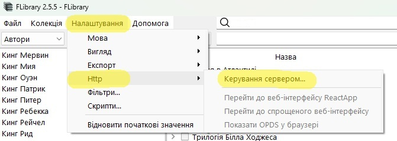
У діалоговому вікні, що відкрилося
Натискаємо Пуск і все, сервер запущено, тепер можна подивитися на його роботу.
Для цього достатньо натиснути на написи, що стали клікабельними.
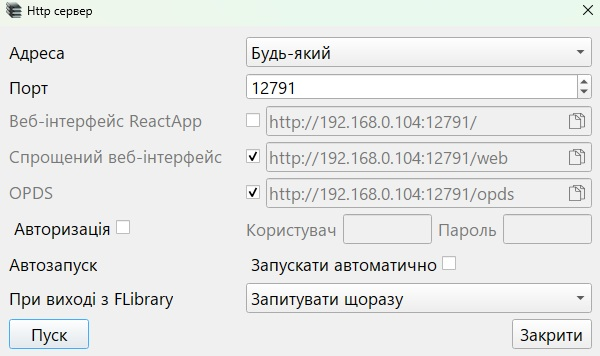
- Веб-інтерфейс ReactApp. У браузері відкриється сайт, розроблений шановним alloroc2. Тут можна шукати книги за назвою/автором/серією, завантажувати їх і навіть читати прямо там, на сайті. Дуже зручно. Інтерфейс сайту доволі інтуїтивний, а функціональність постійно розширюється.
Опис від alloroc2
Працювати через веб можна в браузері з будь-якого пристрою.
Пошук при введенні тексту відразу з розділенням результатів за назвами, авторами та серіями.
Перегляд груп книг, заздалегідь відібраних у програмі.
Для обраної книги статистика + обкладинка, зміст із зазначенням розділів та місцем їх розташування в книзі.
Обрану книгу можна читати, не виходячи з веб-інтерфейсу каталогізатора.
Для зручності читання, перехід у повноекранний режим, а також прокрутка тексту.
Налаштування шрифту та швидкість прокрутки «гарячими» клавішами.
Прогрес прочитаного запам'ятовується в браузері.
Відкрив вебку, знайшов книгу і випав з реальності.
- Спрощений веб-інтерфейс. Відкриється сторінка в браузері, що відповідає моїм знанням html. Там також є пошук, навігація по колекції, завантаження та читання. Але абсолютно без будь-якого дизайну, крайній мінімалізм. Вельми на поціновувача, але мені цього достатньо.
- OPDS. Відкриється сторінка в браузері з якимсь JSON'ом. Власне, за цією адресою треба переходити не браузером, а читалкою з підтримкою протоколу OPDS.
Це тільки вдома буде працювати? А через інтернет не можна?
Можна, але прокидати зазначені порти у зовнішній світ доведеться самостійно. Я в цьому не розбираюся настільки, що навіть не впевнений у змістовності попереднього речення. Гугліть «білий IP» і «тунелі CloudFlare.com». Буду вдячний за будь-які розумні слова в особисті повідомлення про це все.
розумні кажуть
доступ ззовні я прокинув через nginx - просто додав піддомен book.ххх.хх, отримав для нього сертифікат і тепер можна ходити по https, а nginx вже перенаправляє у внутрішній мережі на http.
(c) SoloMen
Зміг з допомогою Tilescale. Що я власне зробив, щоб користуватися:
UPD В налаштуваннях адреси http-сервера можна вказати «Будь-який», тоді сервіси будуть доступні через усі наявні інтерфейси: localhost, 127.0.0.1, локальна IP-адреса, тощо
(c) AncientSUS
📓 А це нічого, що мій антивірус лається на роздачу?
Нічого. На даний час відомо про кілька причин спрацьовування антивірусів на цю роздачу.
- Інсталятор FLibrary_setup.exe.
Файл генерується одним з найпопулярніших інструментів для створення інсталяторів Inno Setup. Можна припустити, що цим же інструментом користуються і вірусописи, тому сигнатури Inno Setup регулярно потрапляють в антивірусні бази. Що з цим робити? Солідні софтверні контори в аналогічних випадках зв'язуються з вендорами, ті підкручують свої бази, і антивіруси перестають помилково реагувати. На жаль, я не солідна контора, у випадку з FLibrary залишається лише довіритися моєму чесному слову і забити на антивірус. Я так і роблю. Ще можна використовувати msi-інсталятор або архів з «портабельною» версією, на них вірустотал жодного разу не лаявся.
Або ретельно вивчити вихідні коди на предмет шкідливості і збирати проект самостійно. - У бібліотеці є книга Олега Михайловича Бойцова "Защити свой компьютер на 100% от вирусов и хакеров", файл 166093.fb2 у архіві fb2-166043-168102.7z.
Схоже, деяким антивірусам не подобаються приклади шкідливого коду, що міститься там. На мою думку, це явний перебір і параноя. Якщо ваша читалка не намагається інтерпретувати і запускати скрипти зі сторінок книг - турбуватися немає про що, можна сміливо додавати *.fb2 у винятки антивіруса. - Є також книга Чадова Тимофія "Использование ListView в режиме виртуального списка", файл 170704.fb2 у архіві fb2-168103-172702.7z. В неї автор вклав виконуваний exe-файл, на який лаявся щонайменше один вендор з virustotal. Але, наскільки мені відомо, антивіруси поки що не намагаються парсити fb2 з метою декодувати бінарні вкладення з base64, розпакувати отриманий архів, проаналізувати його вміст. Якщо ваша читалка не намагається досліджувати бінарні вкладення книг, на які немає посилань з її сторінок, з метою запуску раптово знайдених там програм, то знову ж таки немає про що турбуватися.
📓 Знайшов косяк у програмі, що робити?
- Переконатися, що косяк є в останньому релізі FLibrary. Особливо це стосується описок, безліч яких була знайдена і виправлена під час написання цих інструкцій.
- Запостити багрепорт тут, по можливості описавши косяк, додавши скріншот, etc
📓 Обіцяють швидку роботу FLibrary, а насправді тормозить. Набрехали?
Щонайменше у одного користувача спостерігалися перешкоди в роботі програми з боку Microsoft Defender'а, що проявлялося в уповільненні роботи і підвищеному споживанні оперативної пам'яті. Налаштування Defender'а допомогло.
Спробуйте внести в список виключень антивіруса
- Папку з програмою
- Папку з базою даних колекції
- Папку з архівами книг
- Папку з тимчасовими файлами (%TEMP%)
📓 У меню є якісь «розваги». Проставив усі галочки, що далі?
Розважальний контент з'являється замість порожньої анотації, коли у вікні книг не вибрано жодної книги.
Наприклад
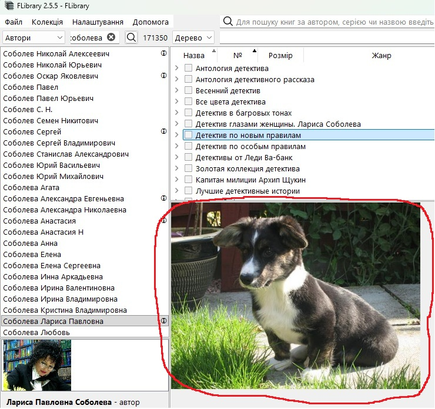
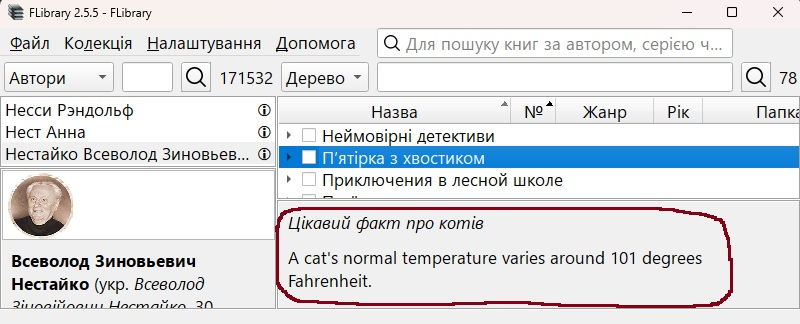
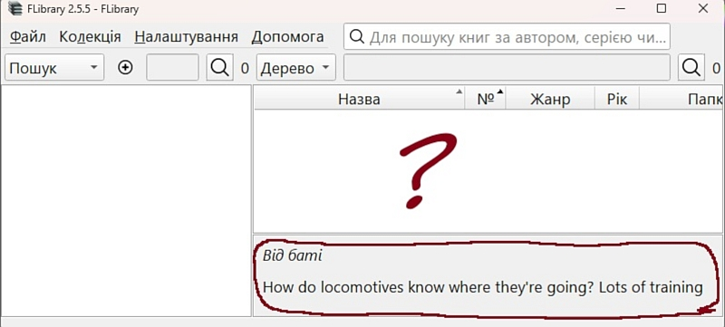
Бачу порожню анотацію, де жарти?
Щоб це працювало, потрібно мати доступ а) до Інтернету, б) до сервісів, які надають контент. Слід враховувати, що деякі сервіси можуть перестати працювати. А до деяких немає доступу з вашої локації без VPN.
Чому все англійською?
Якщо знайдете (або запровадите свій) подібний загальнодоступний (без реєстрації та смс) сервіс іншою мовою — повідомте мене, я додам його
📓 Для чого в роздачі така кількість інсталяторів FLibrary?
Three Rings for the Elven-kings under the sky
Seven for the Dwarf-lords in their halls of stone
Nine for Mortal Men doomed to die
Генерується InnoSetup. Основний інсталятор, найбільш зручний і функціональний. Дає можливість
- Вибрати мову інсталятора
- Вибрати режим встановлення тільки для мене/для всіх
- Запустити програму відразу після встановлення
II FLibrary_setup_x.y.z.msi
Microsoft Windows Installer. Швидше за все, я просто не вмію його готувати, але
- Мова інсталятора одна і для універсальності англійська
- Програма встановлюється тільки для всіх, в `C:\Program Files`
- Після завершення роботи інсталятора автоматично нічого не запускається
III FLibrary_portable_x.y.z.7z
Це взагалі не інсталятор, а просто архів з бінарними файлами. Розпаковувати і налаштовувати ярлики запуску доведеться самостійно, вручну. Встановлена таким чином програма зберігає свої налаштування не в реєстрі, а в ini-файлі, що знаходиться поруч, типу portable. Отже, розпаковувати треба туди, де є доступ на запис.
Ну і який же встановлювати?
Вміст усіх інсталяторів практично ідентичний, можна встановлювати будь-який, на своє уподобання та досвід. Але раджу перший варіант, оскільки сам використовую саме його. Решта два майже ніколи не тестуються.
📓 А де програма зберігає ...?
налаштування
Звичайна версія (встановлена інсталятором) - гілка реєстру HKEY_CURRENT_USER\SOFTWARE\HomeCompa\Flibrary
Портабельна версія (з архіву) - файл FLibrary.ini в папці програми
журнал работы (логи)
Файл %TEMP%\HomeCompa.FLibrary.log
Останні записи логу можна переглянути безпосередньо в програмі, натиснувши Esc. Або через меню Налаштування/Вигляд/Журнал/Показати.
📓 А можна повний список прихованих налаштувань FLibrary?
Мало кому потрібні речі, тому їх немає в інтерфейсі, щоб не захаращувати.
- v2.0.0 `Preferences/LibRate/symbol`, число за замовчуванням 11088 - ascii или utf-8 код символу зірочки ⭐ для колонок рейтингу. Коди різних символів можна подивитися тут. Можна використовувати ті, що мають в Hex не більше чотирьох знаків.
- v2.1.2 `Preferences/hideScrollBars`, строка (true | false) за замовчуванням true - керує видимістю скролбарів. Якщо задати “false”, скролбари не будуть ховатися.
- v2.1.4 `Preferences/GenresSortMode`, строка (SortByCode | SortByName | SortByChildCount | SortByCodeDesc | SortByNameDesc | SortByChildCountDesc), за замовчуванням SortByCode - режим сортування жанрів
- v2.1.4 `Preferences/opds/BookEntryLimit`, число DWORD, за замовчуванням 25 - ліміт на кількість книг, що передається одним списком по http.
- v2.2.0 Не налаштування, але прихована функціональність. Комбінація Alt+Shift+Q призведе до появи вікна, в якому можна виконувати SQL-запити до бази даних колекції. Результати виконання запитів - в логах
- v2.2.1 `Preferences/opds/transliterate`, строка (true | false) за замовчуванням false - транслітерація назви файлу, завантаженого по http.
- v2.2.1 `Preferences/LibRate/precision`, число DWORD, за замовчуванням -1 - замінює зірочки рейтингу книги в бібліотеці на число із визначеною цим параметром точністю. Для дійсно середнього рейтингу по Флібусті знадобитися файл reviews\additional.zip. За відсутності цього налаштування або при його значенні -1 показуються зірочки.
- v2.2.1 `Preferences/LibRate/colors/2.0`, `ui/Books/LibRate/colors/3.0`, `ui/Books/LibRate/colors/4.5`тощо. Число DWORD, що відповідає кольору у форматі RRGGBB. Для градієнтного забарвлення цифр рейтингу з попереднього пункту.
- v2.2.2 `Preferences/AnnotationJokes/Visible`, строка (true | false) за замовчуванням true - при встановленні в “false” відключає функціональність розважального контенту в порожній анотації
- v2.2.2 `Preferences/AnnotationJokes/%ApiName%Visible`, строка (true | false) за замовчуванням true - при встановленні в “false” відключає роботу %ApiName%, ховає відповідний пункт меню “Налаштування/Вигляд/Анотація/Розваги/%ApiNameTitle%”. Є сенс відключити ті API, які є недоступними у вашій місцевості. Або ті, що перестали працювати.
- v2.3.0 `Preferences/opds/ReadUrlTemplate` Шаблон посилання на читалку з Web. Наприклад, якщо встановити в "http://127.0.0.1:44080/#/reader?url=http://%HTTP_HOST%:%HTTP_PORT%/Images/fb2/%1" то можна читати книжки ліберамою. Для цього лібераму спочатку треба завантажити, налаштувати і запустити. Можливо, цьому налаштуванню колись знайдеться й інше застосування.
- v2.3.0 `Preferences/opds/SeparatedSearch`, строка (true | false) за замовчуванням false - для OPDS і Web-інтерфейсу включає режим роздільного пошуку за авторами, серіями, назвами книг, все разом.
- v2.3.0 `Preferences/opds/AutoupdateCollection`, строка (true | false) за замовчуванням false - при встановленні в `true` http-сервер (opds.exe) відстежуватиме inpx і, у разі його зміни, автоматично оновить колекцію.
- v2.4.1 `Preferences/StartFocusedControl`, строка (SearchBooksByNames | NavigationSearchAndFilter | BooksSearchAndFilter) за замовчуванням SearchBooksByNames - поле введення, активне при запуску програми.
- v2.4.1 `Preferences/Alphabets/LinkedControl`, строка (SearchBooksByNames | NavigationSearchAndFilter | BooksSearchAndFilter) - поле ввода, з яким працює панель алфавітів. За замовчуванням - не вказано, панель алфавітів працює з активним полем ввода, тобто з тим, в якому зараз знаходиться курсор.
- v2.4.1 `Preferences/CommonBooksTableColumnSettings`, строка (true | false) за замовчуванням false - при встановленні в `true` налаштування стовпців таблиці книг стане загальним для всіх режимів навігації.
- v2.5.0 `Preferences/AnnotationReviewSortMode`, строка (Time | Reviewer | Text | TimeDesc | ReviewerDesc | TextDesc), за замовчуванням Time - режими сортування відгуків читачів в анотації.
- v2.5.4 `Preferences/HideToTray`, строка (true | false) за замовчуванням false - при встановленні в `true` програма по Alt+F4 і по натисканню на хрестик в головному вікні ховається в системний трей. Вихід через головне меню і по гарячій клавіші закриває програму.
- v2.5.4 `Preferences/MultipleInstance`, строка (Enabled | Disabled | Dialog) - налаштовує можливість запуску декількох екземплярів FLibrary. Enabled - можна запустити кілька екземплярів, Disabled - не можна, при запуску наступного екземпляра програми буде показуватися вже наявний, Dialog - при запуску наступного екземпляра буде показано діалогове вікно. За замовчуванням - Enabled. Але якщо встановлено режим HideToTray (див. вище), то завжди Disabled, незалежно від встановленого значення налаштування.
- v2.5.4 `Preferences/Export/TransliterationMode, строка (None | FileNameOnly | AllExceptUserPath | All) - налаштовує транслітерацію імен файлів, що експортуються. За замовчуванням - None, тобто не транслітерувати. FileNameOnly - буде транслітеровано ім'я файлу, AllExceptUserPath - транслітерувати шлях експорту, крім вибраної користувачем папки (%user_destination_folder%), All - транслітерувати весь шлях експорту.
- v2.5.4 `Preferences/Interaction/Book/OnLink`, строка (Read | ExtractAsFb2 | ExtractAsZip) - налаштовує поведінку програми при кліку на посилання-заголовок книги в анотації. За замовчуванням - Read - відкрити книгу в читалці. ExtractAsIs - видобути книгу. ExtractAsZip - видобути книгу і запакувати її в zip-архів.
- v2.5.4 `Preferences/Interaction/Book/OnDoubleClick`, строка (Read | ExtractAsFb2 | ExtractAsZip) - налаштовує поведінку програми при подвійному кліку на рядку в таблиці книг, значення ті ж, що і в попередньому налаштуванні.
- v2.5.4 `Preferences/RelativePaths', строка (true | false) за замовчуванням false - при встановленні в `true` програма буде зберігати в налаштуваннях відносні шляхи (читалка, скрипти, ...)
- v2.5.5 `Preferences/ReadMarkColor', число DWORD, що відповідає кольору у форматі RRGGBBAA (AA інвертовано, тобто FF – повністю прозорий) – колір мітки прочитаних книг.
- v2.5.5 `Preferences/ReadMarkWidth', число DWORD, за умовчанням [b]4[/b] - ширина мітки прочитаних книг.
Прочитав ЧаПи про приховані налаштування. "Нічого не зрозумів, але було цікаво ©".
Дивно, до вас ніхто не скаржився. Що ж, давайте розжую. Ви захотіли замінити символ зірочки...
Якщо у вас портативна версія FLibrary, то:
Якщо ваша версія FLibrary встановлена інсталятором, то:
Замість числа 9734 підберіть інше, на свій смак, наприклад звідси.
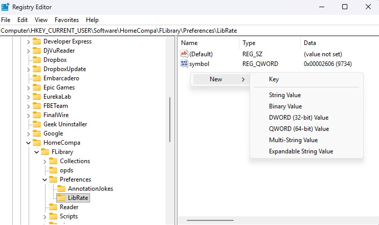